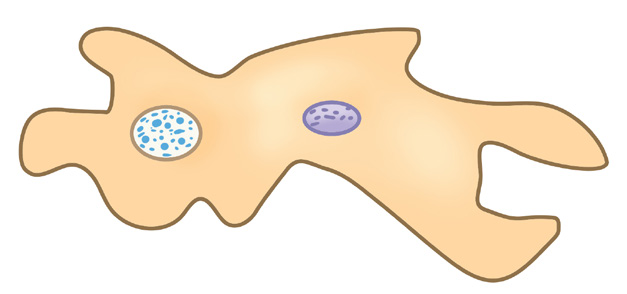
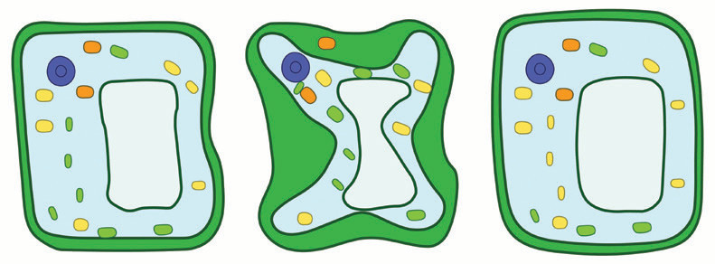
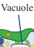

70
Student’s Book - Form Two
Biology for Secondary Schools
plant cells absorb water, causing the cell membrane to push against the cell wall. The cell is then said to be turgid.
That is, it does not burst because the cell wall resists pressure exerted from the cell membrane and restricts additional intake of water. Turgidity helps plant cells to maintain their shape.
In a hypertonic solution, plant cells lose water. This causes the vacuole to shrink and the cell surface membrane to pull away from the cell wall, making the cell flaccid. The flaccid cell is said to be plasmolysed, and the process is called plasmolysis. If a plasmolysed cell is placed in a hypotonic solution, it absorbs water and becomes turgid
(Figure 3.6).

Contractile vacuole
(a) Excess water collected by contractile vacuole
(b) Excess water removed by
contractile vacuole
removed excess water
Nucleus
Nucleus
Figure 3.7: Water balance in amoeba through contractile vacuole
(c) Turgid cell
(a) Normal cell
(b) Plasmolysed
cell

Vacuole

Vacuole
Vacuole
Figure 3.6: Effect of osmosis on a plant cell
Osmosis in unicellular organisms:
Unicellular organisms that live in fresh water such as Amoeba and Euglena, are hypertonic to their surroundings.
Hence, water enters into the organisms by osmosis. These organisms have a contractile vacuole, which collects the excess water and removes it from the cell as shown in Figure 3.7.
This prevents the cell from bursting.
Osmosis is also used for regulating their body mineral contents.
08/04/2026 10:18:18